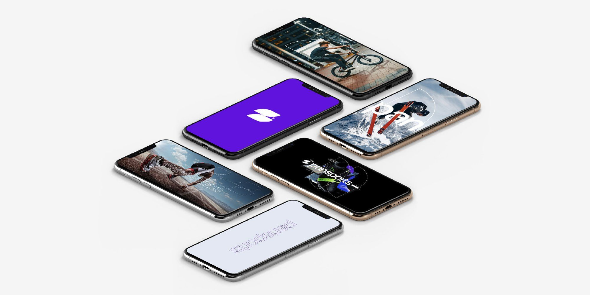

A brand to match the company it keeps, built to stand beside sport’s biggest names.
Pansports is the group behind Real Madrid, FC Barcelona, Aston Martin F1 and Aramco. Its brand had to sit comfortably in that company. We carried out a brand transformation that runs from a newly constructed wordmark and symbol to a type and colour system, a campaign look built on athletic photography, and a website for the brands and athletes it works with.

The company it keeps
Pansports works in sports marketing, and it is the group behind Real Madrid, FC Barcelona, Aston Martin F1 and Aramco. A business in that position is judged on sight by the names it sits beside, so the brand had to carry the same weight in a pitch deck, on a stadium screen or in a phone feed.
The brief for brand and identity development set out four qualities for the new brand to hold at once: powerful, clean and sophisticated; refined and unique; minimal with flair; and the presence of a global power in its field.
A wordmark built letter by letter
The identity starts with a wordmark constructed from its letterforms up, with the spacing and proportions of each character set out on a grid. Beside it sits a symbol made from two mirrored curves, compact enough to hold a phone screen on its own and bold enough to be drawn large across a photograph.
The type system pairs Druk, a condensed display face for headlines with real force, with Halyard Display for secondary text. The palette is held to three colours: a deep purple, white and a near-black. A set of simple line icons completes the kit for contact details and social channels.
Breaking through excellence
The brand line, Breaking through excellence, sets the tone for the campaign look. The symbol is drawn as a fine outline over athletic photography, so a dunk, a sprint start or a pair of boots becomes part of the identity without the logo shouting over the action.
The same device scales from a basketball court to a running track, and it lets the wordmark sit cleanly on dark, light or busy images. Purple accents tie each piece back to the system.
One site for brands and athletes
The website opens on Breaking through excellence over an aerial view of a floodlit stadium, and presents Pansports as sports marketing experts for the modern era. Druk headlines and purple subheads carry the identity straight into the interface.
The site speaks to two audiences. For brands, it sets out strategic sponsorship, ambassador endorsements and partnerships, integrated campaign development and production, and advertising. For athletes and entertainers, it covers endorsement and partnership acquisition, career transition planning, content creation and distribution, and philanthropy and social impact initiatives. The layout was designed for desktop and mobile alike.
One system from symbol to site
Pansports now presents itself through a single system, from the constructed wordmark and symbol to campaign imagery and a website built for both of its audiences.
The same purple, the same condensed headlines and the same outline symbol run through every piece, so a sponsor meeting the brand on a stadium screen and an athlete meeting it on a phone see the same company.
“Since we started working with Pivitt, our expectations have been exceeded. Another important element for us is the team’s ability to maintain the same quality even when the deadline is very short.”
What changed.
Pansports now presents itself through one brand system, from a constructed wordmark and symbol to a type and colour system, a campaign look built on athletic photography and a website for brands and athletes, giving it a brand to match the company it keeps.
Read it on pivitt.co.uk